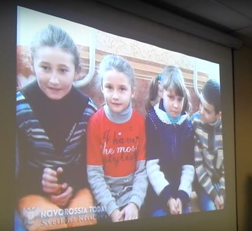

Notre jeune République a actuellement une représentation officielle en France. Cela constitue une excellente nouvelle pour tous les acteurs de l’amitié franco-russe.
Au centre de cette initiative est Monsieur Hubert FAYARD, Président du Centre des Indépendants des Bouches-du-Rhône (CNIP) et Conseiller municipal de Coudoux.
Le 17 juin 2017, une annonce légale sur le Centre de représentation officielle en France de la République Populaire de Donetsk est publiée dans le Journal officiel de la République française. Déclaré à la sous-préfecture d'Aix-en-Provence dans le département Bouches-du-Rhône (Provence-Alpes-Côte-d'Azur), cette association a pour le but de représenter en France la République Populaire de Donetsk.
Un travail en commun de plusieurs mois avec l’équipe de Novorossia Today (Erwan CASTEL et Svetlana KISSILEVA) et le Ministère des Affaires Étrangères de la RPD a précédé à cet événement.
M. FAYARD connaissait Donetsk encore avant la guerre, il a également eu une visite pendant le conflit, mais cet été il a décidé de faire une démarche permettant d’améliorer des liaisons d’information, économiques et culturelles entre nous et le peuple français.
Accompagné par Christiane PUJOL, conseillère départementale des Bouches-du-Rhône et cadre du mouvement « Debout la France » (DLF), Christian BORELLI, conseiller national des Républicains (LR) et conseiller municipal de Vitrolles et Marc PUJOL, assistant, il arrive, le 24 juin 2017, à Donetsk. Sans prendre le temps de se reposer, ils rencontrent très rapidement les résidents francophones de Donetsk afin de discuter de la situation dans le Donbass. Nous serons vite rejoints par M. Emmanuel LEROY, le Président de l'association « Urgence Enfants du Donbass », et son épouse Mme Estelle MOSER, et par M. Kris ROMAN, le Président de l'association « Euro-Rus », pour continuer la soirée dans les échanges fructueux.
Le 25 juin 2017 la délégation française est reçue par Mme Natalia NIKONOROVA, Ministre des Affaires étrangères qui accueille la délégation avec courtoisie et enthousiasme.
À l’issue de l’entretien, la délégation se rend à Oktiabrskiy, la zone bombardée de Donetsk qui se trouve près de la ligne de front.
Dirigé par Erwan CASTEL, volontaire français, demeurant à Donetsk, les élus ont pu voir par leurs propres yeux les dégâts et la souffrance du peuple suite aux actions militaires ukrainiennes.
Malgré les résidentiels et les infrastructures qui sont toujours sous les obus, les habitants ne s’arrêtent pas à entretenir leur quartier et font tout pour que la vie continue. À l’instar de cette femme courageuse, dont la maison, construite par sa famille pour 20 ans, a été détruite pendant un bombardement incessant durant 20 minutes, et qui a recueilli toute l’admiration du groupe. Malgré tout, elle ne perd pas l’espoir et continue de vivre avec un optimisme exceptionnel.
Si les infrastructures peuvent être restaurées, il est impossible de faire revenir les morts, telles les vies de ces jeunes garçons tués par des tirs ukrainiens pendant leur jeu au football…
Le matin du jour suivant a été prévu pour les missions humanitaires. Ainsi deux visites se sont succédées : la visite du service de traumatologie et un orphelinat.
Durant ces visites, l’association d’Emmanuel LEROY, « Urgence Enfants du Donbass », a offert des équipements médicaux et des médicaments nécessaires pour le soin des patients. Il a pu être constaté par nos visiteurs le professionnalisme du personnel de l’hôpital qui permet de résoudre les tâches les plus difficiles dans les conditions de guerre. Car malheureusement, les traitements des civils blessés par des éclats d’obus, des mines ou par des balles de snipers sont devenus leur quotidien. En 2014 l’hôpital a été également bombardé mais les médecins n’ont à aucun moment cessé leur travail.
Emmanuel LEROY
Le 26 juin 2017, au cours d’une conférence de presse, Mme NIKONOROVA et M. FAYARD ont signé le protocole d'accord. Madame la Ministre a souligné l’importance et l’intérêt de la coopération avec la France, notamment dans le domaine social, culturel, international et surtout celui d’information. M. FAYARD s’est engagé à transmettre la voix de la RPD en France.
M. BORELLI et Mme PUJOL ont reconnu que la visite leur a permis de voir et de comprendre la situation réelle au Donbass, de mieux appréhender les besoins et plus encore de mesurer combien la désinformation sur la situation dans le Donbass était criante.
Après la réunion du Comité du Conseil du peuple pour la politique extérieure et les échanges internationaux, la délégation française a participé aux Deuxièmes Rencontres francophones organisées par l’Institut Franco-Russe de Donetsk.
Deux mois plus, le 25 septembre 2017, s’est tenue l’inauguration de la Représentation de la République Populaire de Donetsk à Marseille.
M. Hubert FAYARD, Président du Centre de Représentation, a salué tous les invités : les élus, les médias, les représentants des associations et des autorités et. Malgré que pas tous les personnalités politiques et diplomatiques ont pu venir, M. FAYARD les a remercié pour leurs messages d’excuses.
Madame NIKONOROVA, la Ministère des Affaires étrangères, a adressé son message vidéo à l’équipe de la Représentation :
« Au nom des autorités de la République Populaire de Donetsk, je tiens à vous féliciter à l’occasion de l’inauguration du Centre de représentation de la République Populaire de Donetsk à Marseille. C’est un événement d’une grande L’ouverture du cinquième centre de représentation de notre République en Europe est un événement marquant dans la vie politique de notre jeune État. Dans ce processus d’émergence de la République Populaire de Donetsk en tant qu’acteur à part entière dans l’arène des relations internationales, la diplomatie populaire joue un rôle particulièrement important par la mise en place et le développement de liens culturels, économiques et sociaux, qui ne limitent pas la reconnaissance de notre État uniquement sur un plan diplomatique.
Dans cette situation l’installation des contacts directs avec le public européen est très importante, puisque cela signifie l’expansion de l’information nette à propos des conditions du déroulement du conflit au Donbass, celle d’habitation de la population, de l’établissement de notre République comme État, de notre développement, de nos succès et réussites. Nous voudrions exprimer notre profonde et sincère reconnaissance à l’égard de toute l’équipe du Centre, et en particulier à l’égard de Monsieur Fayard, pour tout le travail réalisé pour la création de ce Centre de représentation de la République Populaire de Donetsk en France. Tous vos efforts et toutes vos actions sont vraiment très importants pour l’ensemble de la population de la République Populaire de Donetsk. Nous espérons que notre collaboration sera longue et fructueuse en termes de renforcement des liens entre la République Populaire de Donetsk et la France. Nous espérons également qu’elle contribuera à briser le blocus médiatique et à tisser des relations fortes entre nos deux peuples qui, en fin de compte, permettra d’instaurer la paix sur la terre du Donbass. Mes félicitations pour l’ouverture. Bonne chance. »
Après les applaudissements, M. FAYARD a exprimé son admiration pour le courage de Madame la Ministre et a également transmis ses amitiés à tous qui se trouvent à Donetsk, notamment à Svetlana KISSILEVA, correspondant dont les photos du conflit ont été projetées sur l’écran, Elena de l’Institut franco-russe de Donetsk et les volontaires français : Erwan, Philippe et Sébastien. Deux associations humanitaires ont été aussi évoquées : l’association « Vostok France-Solidarité Donbass » et l’association « Urgence enfants du Donbass » qui fournissent une grande aide à la population dans la zone de guerre.
Puis, selon la tradition lors des inaugurations, M. FAYARD a invité les élus et les autorités franco-russes à venir couper le ruban tricolore.
M. Hubert FAYARD a ensuite attiré l’attention sur le fait que les informations sur le Donbass sont dissimulées et, plus encore, déformées en France.
Il a rappelé que durant sa visite récente, la délégation française a pu voir les souffrances des civils qui se trouvent sous les bombardements de l’armée ukrainienne depuis 2014. La mission principale du Centre de représentation, venant d’être inauguré, sera donc de servir de fenêtre dédiée pour les Français afin de leur faire connaître la situation réelle à Donetsk. Différentes expositions et salons sont prévus à cette fin. Le Centre de Représentation de la RPD est également intéressé par les activités de l’Institut Franco-Russe de Donetsk et planifie de réaliser des échanges culturels avec eux.
Après avoir lu le livre de Laurent BRAYARD « Ukraine, le royaume de la désinformation », Jacques CLOSTERMANN, citoyen d’honneur de Donetsk, ancien pilote de chasse et de ligne, a commencé à s’intéresser le sujet et est venu au Donbass en janvier 2016. Réinformé, il a créé des liens d’amitié avec les francophones du Donbass, notamment Elena SYDOROVA, rédactrice en chef de la revue « Sans Frontières » et Anna POPOVA, Maître de conférences, ainsi que plusieurs enseignants des universités. Il était particulièrement touché par leur attachement à la France. Ses rencontres avec Monsieur Alexandre ORLOV, Ambassadeur de la Russie en France, ont également contribué pour développer des liaisons entre les cultures française et russe.
En réalisant un parallèle avec l’article de Kendal NEZAN « Les Kurdes n’ont pas d’autre choix que de prendre leur destin en main » paru dans le Monde à ce jour-là, où il criait le besoin d’un referendum d’autodétermination pour les territoires kurdes libérés de l’occupation de l’organisation État islamique, processus considéré par chacun comme démocratique, M. CLOSTERMANN a transmis un message de la part du peuple du Donbass pour le peuple français : « Nous sommes Russes, notre culture est russe, nous parlons le russe, nous avons une envie de rester Russes, nous avons une envie de continuer à parler le russe ».
Monsieur Xavier MOREAU, homme d'affaires, dirigeant du site d'analyse géopolitique STRATPOL auteur et rédacteur de la revue « Sans Frontières », a ensuite expliqué les origines de la guerre dans le Donbass et l’histoire de la formation de l’Ukraine.
Pour conclure, le Président du Centre a souligné que la Représentation était apolitique et bénévole et que pour cette raison toutes les personnes qui souhaitent participer au soutien de la RPD sont les bienvenues, quelles que soient leurs orientations politiques.

Partager cette page